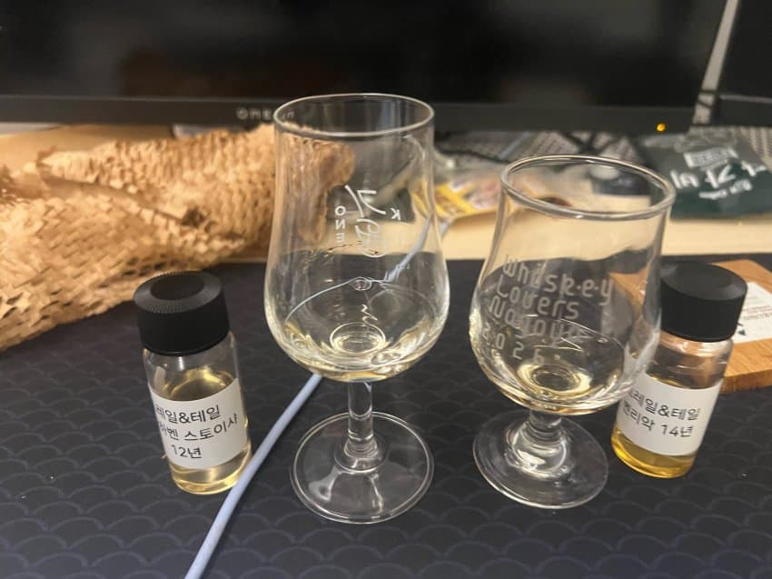

부나하벤
N 강한피트,스모키,해조류,젖은목재,젖은황토,레몬시트러스,바닐라
매우 강한 피트와 스모키
해조류 비린내뉘앙스
젖은목재 젖은황토—- 비온날 황토찜질방같음
레몬시트러스,바닐라 레몬시트러스는 강한편같음
P 피트,스모크,솔티,몰티,메디셔널허브?
노즈에서이어지는 피트와 스모크
꽤 짤장한느낌과 보리단맛
약국파스? 같은뉘앙스가 끝에남는듯
F 피트와,젖은목재
강력한피트와 축축한 목재
비오는날 젖은 목재에 불붙은연기같은느낌
벤리악
N 아세톤,피트중약,유산취,짓무른사과,사과나무,민티힌허브,바닐라.
아세톤은좀튀는쳔 피트는 중약정도—둘다 점점옅어짐
유산취 뉘앙스와 짓무른사과 —-노즈에서는 사과요거트 같은뉘앙스
민티한허브와 바닐라
P. 피트,유산취,사과,바닐라,플라스틱,쿰쿰한 펑키?,후추스파이시
노즈에서 이어지는 피트
유산취와 사과인데 팔레트에서는 사과와인-사과식초사이에 뉘앙스
혀에남는 플라스틱과,쿰쿰한 펑키,후추
옅은 바닐라단맛
F 옅은피트,뭉근한 사과
옅은 짧은듯
총평
부나하벤 강한피트와짠맛시트러스 자극적인 피트느낌이
피트 거북하면 ㄹㅇ 입에도 못댈꺼같은느낌이었습니다
벤리악
피트뉘앙스는 꽤옅었으며 강한
유산취와 뭉그러진 사과가
노즈에서는 요거트 정도의 느낌이었는데
팔레트에서는 시간이 확 지나 식초와 와인사이의 어딘가의 느낌으로 변모하는것이 인상적이었습니다
좋은기회주신 헤비피티드님
감사합니다
댓글 6개